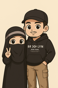

Technical Project Manager from Karawang, Indonesia
Currently working at PT. People Intelligence Indonesia (GreatDay HR)
I am a Software Engineer with extensive experience in Node.js, particularly with NestJS. My technological journey covers backend systems, game development, and DevOps practices using Docker and Rancher. I am also a Machine Learning enthusiast with a special interest in computer vision.
Swagger provider for Adonis 4.x
Google Storage Driver for Adonis Drive
Minio driver for Adonis Drive
JasperReports for NodeJS
Laravel package that converts numbers into Indonesian words
Access your local database using Action Script 3.
Apart from working, I spend time with my family, learning religion, and sometimes playing games.